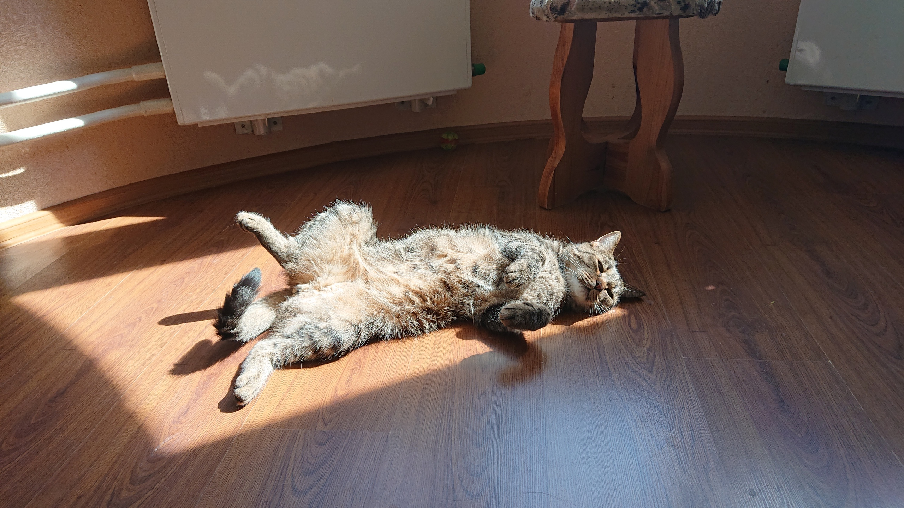

День Зевса начинается с утреннего крика голода, поэтому он начинает будить своих хозяев в 8.30 вместе с будильниками.
К 9.00 хозяева встают и дают ему покушать влажный корм.
После завтрака Зевс обычно любит полежать на солнышке.
Примерно в 12.00 Зевс начинает просить поесть снова и получает в итоге свой любимый сухой корм.
Далее Зевс снова ищет место для отдыха.
Когда хозяйка занимается на ноутбуке, Зевс может посчитать место за ноутбуком наиболее подходящим для дневного сна.

Затем где-то в 15.00 Зевс требует обед, который также составляет сухой корм.
И опять ложится спасть.
После сонного дня Зевс переходит к ужину из влажного корма в 18.00.
Вечером Зевс начинает активизироваться и может начать играть, ловить каких-то мошек, наблюдать за хозяевами, в окошко или просто бегать, как сумасшедший.
Последний вечерний перекус сухим кормом у Зевса происхоит в 22.00.
Однако иногда за хорошее поведение Зевс получает специальные вкусняшки, от которых
он в восторге.
После Зевс любит проводить время с хозяевами, что выражается по разному. Например, он может просто за ними следить, посидеть у них на ручках, отдыхать с ними в кровати.
Завершающая день трапеза состоит из влажного корма и происходит в 00.00.
После чего Зевс отдыхает, спит, дожидаясь будильников.